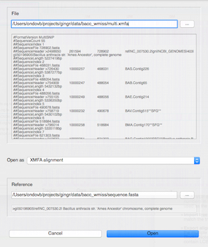
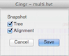
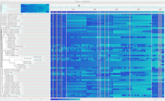
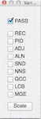
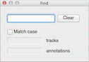

Overview - A miniature view of the entire phylogenetic tree and SNP heatmap, with the currently zoomed sections of each highlighted in blue.
Annotations - If a GenBank file was provided, its annotations will appear here. When zoomed out, they are condensed into a density plot. Hover over genes to show more information, and click on them to zoom. This view also shows LCB boundaries (gray lines; faded out if crowded), and reference contig boundaries (red lines).
New - Create a new workspace, clearing any currently loaded files.
Open - Open a Gingr workspace or other data file. If the file can be imported with a reference or has an unrecognized extension, the Open window (below) will prompt for more information and provide a preview of the contents of the file. Opening a Gingr file will clear any currently loaded files.

Save - Save the current workspace as a Gingr (.ggr) file. The Gingr file encapsulates all the information displayed in the workspace and is not dependent on the imported files. Files exported from the Gingr workspace, however, may not contain as much information as the original imported files (see import and export options below).
Save as - Save the current workspace as a Gingr (.ggr) file as above, prompting for a new name.
Export alignment (XMFA) - Export the multiple alignment in the Parsnp version of the eXtended Multi-FastA format. If the multiple alignment was imported via MFA or VCF, the alignment will be contained in a single LCB (Locally Collinear Block). Note that Gingr stores core alignments only, so if an XMFA file was imported, the exported version will only contain LCBs that involved all tracks in the original file.
Export tree (Newick) - Export the phylogenetic tree in Newick format.
Export variants (MFA) - Export a special Multi-FastA alignment file that only contains columns with variants, ignoring columns associated with filters other than the "N" filter. This format does not contain positional information and is mostly useful for building phylogenetic trees.
Export variants (VCF) - Export variant columns of the multiple alignment in the Variant Call Format. Note that VCF cannot represent aligned indels, so only columns without gaps will be output.
Snapshot - Opens a dialog for saving the phylogenetic tree and SNP heatmap as images.

Reroot at midpoint - Balances the tree at the center of the longest path.
Adjust branch lengths - Toggles whether the branch lengths shown in the status bar (or exported to Newick) are adjusted to account for total core size (since trees are typically generated with variant columns only). Note that this option will only be available for Gingr files generated by Parsnp version 1.1 or later, or with harvesttools using the -u flag.

Right-align labels - Toggles right-alignment for the text of the labels.
Light colors - Toggles the use of a light color scheme for the SNP heatmap (and alignment, when zoomed).
Variants - Opens the Variants dialog, which controls filters that are applied to the SNP heatmap. If PASS is checked, SNPs that are not marked with any filters will be shown. If other filters are checked, SNPs marked with those filters will be shown. The Scale button changes the scale of the heatmap colors to the match the maximum SNP density with the current filters applied.

Find - Opens the Find dialog, which allows track names and annotations to be highlighted based on search terms.
